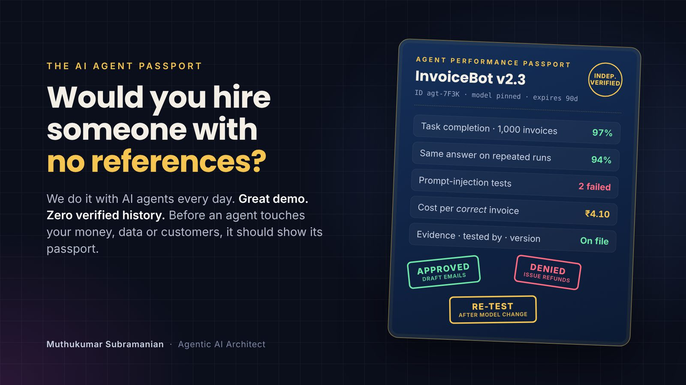

Your AI Agent Has No CV. Would You Still Hire It?
By Muthukumar Subramanian · Agentic AI Architect

Imagine hiring a finance executive like this.
No CV. No references. No background check.
Just a brilliant 20-minute demo, and then you hand over access to the company's accounts.
Nobody would do that.
Yet this is exactly how many companies are choosing AI agents today.
The vendor runs a slick demo. The agent reads an invoice, fills a form, answers a customer, and the room is impressed. A few weeks later it's in production, with access to real data, real money and real customers.
Then someone asks the uncomfortable question:
"How do we actually know this thing is reliable?"
Usually, nobody has a good answer.
A demo is a performance, not evidence
Traditional software is fairly predictable: same input, same output, and you can test it against a spec.
AI agents don't work like that. The same agent can:
→ Get a task right today and wrong tomorrow when the input changes slightly
→ Pick the wrong tool with complete confidence
→ Quietly go beyond what it was supposed to do
→ Give a beautifully written answer with nothing behind it
Its behaviour also depends on much more than the model: the prompt, the tools, the memory, the permissions and the infrastructure around it. Change one of those and you effectively have a different agent.
So when a vendor says "our agent is reliable", the honest follow-up questions are:
Reliable at what? Under which conditions? Tested by whom? And when?
A model benchmark can't answer any of them.
We rate everything, except the things we're giving the keys to
Restaurants get ratings. Borrowers get credit scores. Doctors and chartered accountants need certifications. Even a used car comes with a service history.
AI agents are about to approve payments, change records and talk to our customers, and they come with a marketing deck.
I think every AI agent should carry a passport.
The AI Agent Performance Passport
The idea is a machine-readable record of independently verified evidence that travels with the agent. Before you deploy it, the passport answers five questions:
1. Can it do the job? Task completion, accuracy and correct tool use, measured on your kind of work, not a generic benchmark.
2. Can it do it consistently? Repeated runs, edge cases, messy inputs. A 97% score that drops to 70% on the second run isn't 97%.
3. Is it safe to give it access? How it handles data and permissions, and whether it resists malicious instructions hidden in a document or an email.
4. What does a correct result actually cost? Not price per token. Cost per successful task, including retries, failures and clean-up.
5. Can I verify all this? Who tested it, which version, which tests, and when the evidence expires.
The passport doesn't say "trusted". It says what has actually been demonstrated. That's a big difference.
Here's where it gets interesting
Say three vendors pitch invoice-processing agents. Instead of picking the best demo, you run all three through the same test: 1,000 real-world invoices, including scanned copies, missing fields, duplicates, totals that don't add up, and a few deliberately sneaky instructions.
The (hypothetical) results:
🟢 Agent A: 97% completion, ₹4 per invoice
🟡 Agent B: 94% completion, ₹1.50 per invoice
🔴 Agent C: 99% completion, but fails several security tests
Most people's instinct is to pick C. It's the "best", after all.
But C shouldn't get anywhere near production until those security gaps are fixed. A is your choice for routine work. B could be excellent for low-risk volume with a human check on top.
The best agent isn't the smartest, the cheapest or the most popular one. It's the one whose proven abilities match the job, with risks you can live with.
The passport also makes permissions specific. An agent can be approved for drafting customer emails and denied for issuing refunds. That's how we treat new employees, and agents deserve the same.
How it would work (the short version)
Five building blocks:
- Identity: every agent version gets a unique ID tied to its operator, model, tools and declared capabilities.
- Independent testing: standardised and task-specific evaluations in a controlled environment.
- Evidence trail: test definitions, environment, timestamps and evaluator, all kept and auditable.
- The passport itself: a versioned profile showing capability by task, known weaknesses and an expiry date.
- Policy check: your organisation compares the passport against its own rules before granting access.
The registry informs the decision. Your organisation still enforces permissions at runtime and still owns the outcome.
Is anyone already doing this?
In pieces, yes, and that's good news.
IEEE has an active standards project (P3777) on benchmarking and performance metrics for AI agents. NIST's National Cybersecurity Center of Excellence has published a concept paper on identity and authorization for software and AI agents. Plenty of teams are building evaluation tools.
What's missing is the connection between them: a practical, independent record that links what an agent claims, what it has proven and what it's allowed to do, and keeps that record current as the agent changes.
The goal isn't yet another universal "AI score". It's evidence you can actually use when choosing an agent for a specific job.
The hard questions (I don't have all the answers)
🤔 Who checks the checkers? Vendors will always want to look good, so independence, open methods and reproducible tests are non-negotiable.
🤔 Can one number capture trust? I doubt it. One score hides the one weakness that matters. Capability, reliability, security and cost need to stay separately visible.
🤔 How fast does a passport go stale? Change the model, the prompt or the tools and the old evidence is out of date. Passports need versions and expiry dates.
🤔 Do test results predict real life? Not perfectly. A good registry admits what it didn't test, and you should still pilot in your own environment.
🤔 Who's accountable when it fails? Still you. A passport improves decisions. It doesn't transfer responsibility.
Why this matters now
Right now most companies are experimenting with agents. Soon they'll be depending on them, for finance, code, operations and customers.
When that happens, "it looked great in the demo" won't survive the first audit, the first incident or the first board question.
We spent decades building trust systems for people and companies. AI agents need one too, built before something goes badly wrong rather than after.
So here's my question to you 👇
Would you trust an AI agent more if it came with an independently verified passport? Or is your demo-and-pilot approach working just fine?
I'd really like to hear how your team decides today.
Sources:
- IEEE P3777: Standard for Benchmarking and Performance Metrics of AI Agents
- NIST NCCoE: Software and AI Agent Identity and Authorization